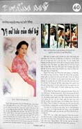
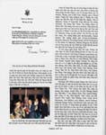
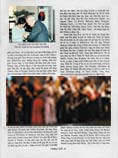
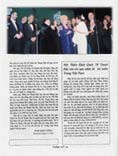

| Revue de presse |
|
|
|  |  |
|  |  |
Les Aulaciens sont reconnus de par le monde par la bataille de Dien Bien Phu et par la guerre qui a duré de 1965 à 1975. Plus particulièrement après la chute de Au Lac du Sud, des millions de Aulaciens ont quitté leur terre natale pour se réfugier dans le monde entier. Cette grande exode a affecté tous le coins de la planète.
Après leur établissement, les communautés d'Aulaciens d'outremer ont reçu beaucoup de sympathie et de respect des pays dans lesquels ils habitent, tels que les États-Unis, le Canada, la France, l'Allemagne, l'Australie, le Japon, l'Angleterre, l'Italie, etc. Les Aulaciens ont de manière continu apporté la renommé et la gloire à ces pays par leurs accomplissements en science, technologie, économie, littérature, art, etc.
Plus particulièrement, il y a une Femme qui a voyagé à travers le monde. Elle est partout où la misère, les désastres et la faim se trouvent. Elle a apporté Son amour pour réconforter et consoler. Elle a généreusement offert Son aide aux Aulaciens qui sont dans les camps de réfugiés, aux victimes d'inondation à Au Lac, au Cambodge, en Thaïlande, aux Philippines, et partout ailleurs dans le monde. Cette humaniste de renom est le Maître Suprême Ching Hai.
Maître Suprême Ching Hai, à part d'avoir grandi à Au Lac, Elle s'est engagé dans plusieurs activités aux États-Unis d'Amérique, et est aussi connue dans plusieurs autres pays dans le monde entier. Maître Suprême Ching Hai est une humanitaire et une artiste de renom très respectée. Son amour et Son aide ont surmonté toutes les barrières culturelles et les limites nationales et ont atteint des millions de gens dans le monde. La compassion est la plus grande marque de commerce de cette Femme et de l'Association Internationale qui a été créée par la suite.
Maître Suprême Ching Hai est née au centre d'Au Lac. Depuis son enfance, Elle a aidé des patients dans des hôpitaux locaux et s'occupait des pauvres. En grandissant, Elle est allée étudier à l'étranger en Europe et a continué de se porter volontaire comme infirmière et traductrice pour la Croix Rouge Internationale. Maître Suprême Ching Hai est partout dans le monde où la misère se trouve.
Ses tableaux, Sa musique, Ses poèmes, et Ses créations de bijoux et de vêtements sont connus mondialement, et reflètent les cultures des pays qu'elle a visités. En 1995, Les créations de vêtements du Maître Suprême Ching Hai ont été exposées dans des défilés de mode et ont été chaleureusement accueillis dans plusieurs endroits connus tels que Londres, Paris, Milan, New York, Formose, Hong Kong, Singapour... Les bénéfices dérivés de Ses oeuvres d'art lui ont donné une source de revenus indépendante pour financer Sa mission d'opérations de secours.
Maître Suprême Ching Hai a reçu plusieurs Prix de la part des gouvernements et des organisations, dont le Prix de la paix dans le monde, Le prix du meilleur leader spirituel au monde et le Prix du citoyen humanitaire international. Maître Suprême Ching Hai a à trois reprises, été invitée à discourir aux Nations Unies à New York et en Suisse.
Pour ses efforts humanitaires, Maître Suprême Ching Hai a été acclamée par plusieurs présidents de différents pays dont le président Clinton des Etats-Unis, les anciens présidents George Bush et Ronald Reagan, les sénateurs Bob Dole et Daniel Akala, le gouverneur Jon Waihee, six gouverneurs des États du centre-ouest, dont le gouverneur Terry E. Branstad de l'Iowa, Jim Edgar de l'Illinois, Arme Calson du Minnesota, Mel Carnahan du Missouri, Tommy G. Thompson du Wisconsin, et Joan D. Finney du Kansas, l'ancien président des Philippines Aquino, le Roi Sihanouk du Cambodge et le Prince Ranarridh, l'ancien maire d'Honolulu, Frank Fasi, et le Maire de Séoul Cho Soon, le Maire de Anhee sur Meusse, en Belgique; Le Maire Souren Abrahamyan de Yerevan, Arménie, le Maire de Manille, Philippines avec la clé de la ville, Le secrétaire-général Nimitr Ajchariyakitisakoul des Affaires étrangères de la Thaïlande, l'Ambassadeur des Philippines aux États-Unis, Peter Spalding, et un des sept plus grands saints de l'Inde, le leader religieux Dada J.P. Waswani.
Plus particulièrement au Québec, Canada, après la tempête de neige de l'hiver, le Maire Claude Bernier de la ville de Ste- Hyacinthe, le Maire Myroslaw Smereka de St-Jean-sur-Richelieu, le Maire Michel Duchesneau de Granby, et le Maire Maurice Bergeron de Ste-Athanase ont écrit des lettres de remerciements à Maître Suprême Ching Hai pour Sa générosité et l'aide qu'Elle a apportée aux sinistrés de la tempête de neige de l'hiver 1998.
Pour ce qui concerne les activités musicales, une soirée de musique et de poésie, "Traces du passé et chansons d'amour," a été organisée à la fin de l'année 1996 au Théâtre Terrace à Long Beach, et a réuni des chanteurs et musiciens aulaciens de talent tels que les musiciens Pham Duy, Thu Ho, Le Uyen Phuong, Nhat Ngan, Duy Khanh, Nguyen Dinh Nghia, Phuong Vu, ainsi que d'autres chanteurs connus tels que Khanh Ly, Le Thu, Mai Huong, Thai Hien, Thai Thao, Le Uyen, Mai Phuong, Kieu Loan, My Huyen, BIch Thuan, Nguyen Dinh Nghia et la famille, Tran Van An, Xuan Phat, Tuan Ngoc, Duy Quang, Dan Hung, Tran Quang, etc. La raison de cette événement musical était d'apporter de l'aide et d'exprimer de la gratitude à tous les artistes qui y ont offert plusieurs pièces très populaires et qui subissent actuellement de nombreuses épreuves dans notre terre natale.
À la fin de l'année 1997, une soirée musicale intitulée "Un voyage à travers les royaumes esthétiques," a été organisée à Washington D.C., avec la participation de plusieurs chanteurs et musiciens américains et aulaciens connus dont David Arkenstone, Tom Mahieu, Larry Bohnert, Arielle Feinberg, Catherine Dubas, Jean Louis Beydon, Pham Duy, Tran Quang Hai Bach Yen, Andy Quang Le, Duy Quang, Joseph Hieu, Le Uyen Phuong, Thai Hien, Y Lan, Dalena, Henry Chuc, Quynh Huong, Kieu Hung, Ai Van, Thanh Lan, Nhu Quyen, la musique traditionnelle de Nguyen Dinh Nghia et de la famille, l'orchestre Tranz, et plusieurs autres. L'auditoire comptait plus de 4000 personnes. La raison de ce concert était d'honorer les vétérans américains qui ont été blessés durant la guerre d'Au Lac (Un montant de 100,000 US$ a été donné au département des États-Unis des affaires des vétérans) aussi pour contribuer au fonds des enfants d'Au Lac, qui doit être administré par l'actrice Kieu Chinh afin de construire des écoles des cliniques médicales à Au Lac.
Plus particulièrement à la fin de l'année 1998, le concert, "Un Monde de paix par la musique" a eu lieu à l'Auditorium Shrine, reconnu au niveau international, endroit où se déroule chaque année la remise des Oscars, là où il y a plus de 6000 spectateurs, ainsi que des compositeurs interprètes populaires aux États-Unis et à travers le monde, tels que le compositeur Bill Conti (vainqueur d'un Oscar et d'un Emmy) son nom a été acclamé par la "Marche de renommée d'Hollywood" et le chef de la cérémonie des oscars, le compositeur Fred Karlin (vainqueur d'un Oscar et d'un Emmy), le compositeur Peter Boyer (cinq fois gagnant du Prix de la musique nationale, qui a composé la musique pour le poème "Titanic"), le compositeur/chef d'orchestre George Thatcher (a écrit la chanson, "Send me a lover (Envoyez-moi un amoureux)", qui a été interprétée par Céline Dion), le compositeur Maria Newman, fille d'Alfred Newman, neuf fois gagnant d'un Oscar, l'actrice légendaire Debbie Reynolds (qui a joué dans plus de 30 films), l'acteur John Moschitta (vainqueur d'un oscar et gagnant pour l'accomplissement à la télévision Arts et Sciences), le fameux orchestre de réputation internationale, Gaelic Storm du film "Titanic", les Beach Boys Family & Friends, et un grand orchestre de plus de 65 musiciens.
Cette soirée musicale a été organisée afin d'apporter un soutien financier pour les enfants atteints du cancer et d'autres maladies graves à travers le monde : un montant de 150000 $US a été donné à l'Hôpital de recherche St-Jude pour enfants et un montant de $100000 US$ a été donné personnellement par Maître Suprême Ching Hai. À la suite de ce concert, plusieurs articles ont été écrits dans les journaux très populaires des États-Unis (The Hollywood Reporter, Los Angeles Times, LA Weekly, Billboard, Balita, Philippine Mabuhay News, et bien d'autres) ainsi que dans les médias aulaciens (Nguoi Viet, Viet Bao Kinh Te, Viet Dong, Saigon Times, Van Hoa, Suc Song, Van Hoi Moi, Tham My, Nghe Thuat, parmi tant d'autres.
Touchés par la compassion et l'amour de Maître Suprême Ching Hai, l'Hôpital de recherche St-Jude pour enfants L'a invitée à leur gala annuel parmi les vedettes de cinéma d'Hollywood et les musiciens. À la suite de cet événement, M. Edvard Akopyan (Président de l'animation du 21ème siècle et Vice-président des studios Glendale) a adressé une invitation spéciale à Maître Suprême Ching Hai à assister au gala des oscars à l'Hôtel Beverly Hills d'Hollywood. Dès l'arrivée de Maître Suprême Ching Hai, le journaliste de la télévision de Malibu, Cookie Cota, a interviewé Maître. Ainsi de grandes vedettes de cinéma d'Hollywood et des personnalités ont eu l'occasion de Lui adresser la parole.
Parmi ces vedettes de cinéma de renom, se trouvait l'actrice Stella Stevens (qui a joué avec Gene Hackman dans "L'aventure du poséidon" et Elvis Presley dans "Filles! Filles! Filles!") qui a fait ses éloges à Maître Suprême Ching Hai pour Son élégance et Sa simplicité, le premier astronaute qui a été sur la lune, Buzz Aldrin, et son épouse ont pris des photos avec Maître Suprême Ching Hai, l'acteur Tony Curtis (qui a joué dans Marilyn Monroe), l' acteur Rod Steiger (qui a joué avec superstar Marlon Brando), l'acteur Henry Silva (Croc blanc à la rescousse), l'actrice Connie Stevens (qui a fait une tournée avec le populaire comédien Bob Hope à Au Lac), la superstar Mark Hamill (Star Wars), parmi tant d'autres. Ils ont tous exprimé le grand honneur qu'ils ont eu, ce soir là, d'avoir parlé avec Maître Suprême Ching Hai.
Tout récemment, Maître Suprême Ching Hai a fait une tournée dans 18 pays européens : l'Italie, l'Espagne, le Portugal, la Pologne, la Russie, l'Arménie, la Bulgarie, l'Hongrie, la Slovénie, la République Tchèque, la Grèce, les Pays Bas, la Finlande, la Norvège, la Suède, l'Écosse, l'Irlande, et l'Angleterre. Maître Suprême Ching Hai a été accueillie chaleureusement par des centaines de milliers de gens qui ont assisté à Ses conférences sur la Méthode Guan Yin. Durant la tournée de conférences, Maître Suprême Ching Hait a de façon généreuse et pleine de compassion fait des dons monétaires à plusieurs foyers pour gens âgés, dans les orphelinats, et d'autres qui contribueront à construire des hôpitaux et des écoles.
Maître Suprême Ching Hai s'occupe constamment de venir en aide aux victimes des tremblements de terre et des inondations en Turquie, en Grèce, à Formose, à Au Lac, en Inde, en Chine. De plus, Elle apporte Son amour dans les pays tels que la Turquie, l'Israël, l'Égypte, l'Afrique du Sud et dans bien d'autres. Le gouvernement et parlement d'Afrique du Sud ont invité Maître Suprême Ching Hai à prononcer un discours à l'ouverture de la cérémonie du Parlement des Religions du Monde, qui a reçu plus de 50 leaders des grandes religions du Monde le 1er décembre 1999 à Cape Town.
Par ses efforts humanitaires autour du monde, Maître Suprême Ching Hai est la première femme aulacienne à être reconnue et admirée à travers le monde. Maître Suprême Ching Hai est vraiment une femme qui mérite qu'on lui réserve le titre honorifique de "Femme du 20ème siècle" dans la communauté aulacienne d'outre-mer.
Pham Manh Cuong Montréal, Canada, novembre 1999
Biographie de Pham Manh Cuong
Le compositeur Pham Manh Cuong est né à Hué et a obtenu son diplôme du Collège de Pédagogie et du Collège des lettres. Il a été enseignant de philosophie, de littérature aulacienne, d'histoire et de géographie, et de musique dans des écoles privées de renom et des écoles secondaires publiques telles que l'école secondaire Petrusky à Saigon, l'école secondaire Nguyen Dinh Chieu à My Tho, Hung Dao, Van Hoc, Nguyen Van Khue, Le Bao Tinh, Huynh Thi Nga, etc. Avant 1975, il avait un programme de télévision à Au Lac, un programme de radio à Saigon, "Fleurs modernes", "Les soldats musiciens" dans les Forces armées, ainsi que les productions de musiques de Tu Quynh.
Pham Manh Cuong a composé plus de 100 chansons, dont les très populaires : Chanson d'automne, la vallée rose, Larmes pour mon coeur, École des jours anciens, Tes cheveux ne se sont pas décolorés, Je t'aime à jamais, L'amour est toujours là, etc. Pham Manh Cuong habite actuellement à Montréal au Canada. Il est le chef d'orchestre de Pham Manh Cuong et le chef éditeur de Tham me, revue mensuelle.
|
|